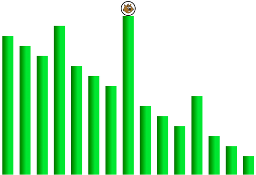
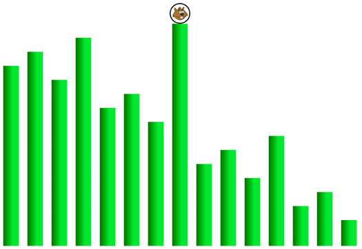

Solution
Il faut placer le bambou d'où part Castor au milieu.

On commence par placer le bambou d'où part Castor au milieu. On limite ainsi castor à 3 sauts.

Ensuite, on réorganise les 3 bambous de gauche, et les 3 bambous de droite. Sur la partie gauche, on place le plus grand des 3 bambous au milieu des deux autres. Sur la partie droite, on fait de même. On limite ainsi Castor à seulement 2 sauts.

On commence par placer le bambou d'où part Castor au milieu.

Ensuite, on réorganise les 7 bambous de gauche, et les 7 bambous de droite. Sur chaque partie, on place le plus grand des 3 bambous au milieu des deux autres.

Ensuite, on réorganise chacun des 4 paquets de 3 bambous que l'on a isolés. Pour chacun, on place le plus grand des 3 bambous au milieu des deux autres.

On limite ainsi Castor à seulement 3 sauts.
C'est de l'informatique !
La version difficile de ce sujet illustre la notion de algorithme récursif, qui consiste à répéter à plusieurs niveaux la même action. Ici, l'action consiste à placer le plus grand bambou au milieu, avant de continuer de la même manière sur la partie gauche et sur la partie droite. Ces deux parties correspondent au niveau suivant dans la résolution du problème.